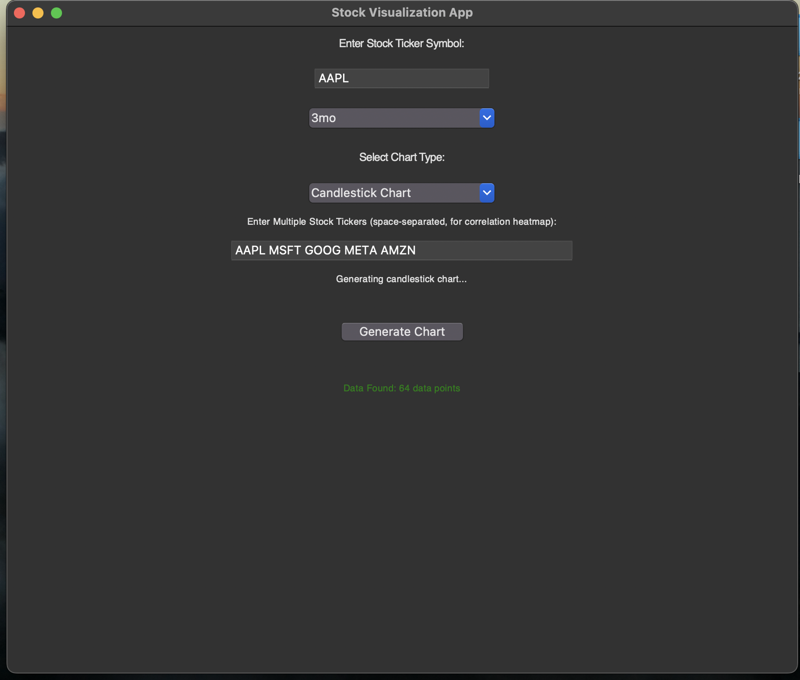
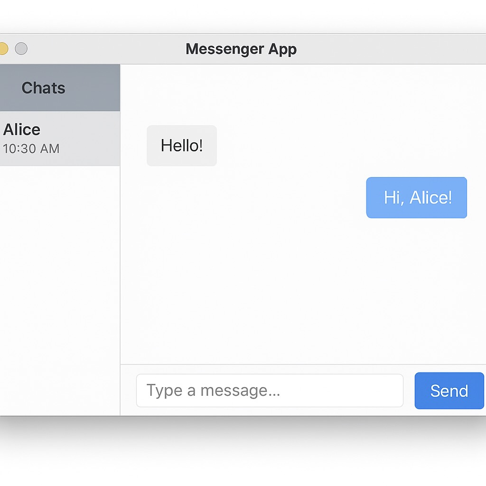

I'm a computer science student with a strong interest in software development, data analytics, and problem-solving. My goal is to build efficient, user-friendly applications and gain experience working with real-world data to prepare for a career as a software engineer.
Developed an intelligent document pipeline to extract and classify mortgage and government documents using OCR, LLMs, and
retrieval-augmented generation (RAG) techniques
Integrated LlamaIndex and embedding-based search with Hugging Face Transformers to enable contextual retrieval and question-
answering across unstructured documents
Preprocessed and cleaned large-scale document datasets, using PyMuPDF and custom OCR filters for enhanced text extraction.
Financial Data Visualization Tool

Designed and developed a Python application to retrieve and analyze real-time stock and options data using the yfinance API,
enabling dynamic financial market tracking
Utilized SQL to query and structure financial datasets, integrating filtered data directly into visualization modules for more accurate
trend analysis
Automated the data pipeline to update and process datasets regularly, increasing platform efficiency and supporting scalable analysis
for broader market research
Messenger App

Engineered a real-time desktop messaging application with JavaFX, featuring a responsive and intuitive user interface for seamless
communication between users
Implemented a secure login system with SQL-based user authentication and data persistence to ensure platform security and
reliability
Integrated multi-threaded Java sockets to manage concurrent client connections